79 vùng ảnh, 80 vị trí đã kiểm kê. Giữ nguyên pixel nhìn thấy, không tạo lại phần bị che. Ba bản đồ gốc dùng trực tiếp từ thư mục blueprint/maps. Ảnh mờ, icon, nhãn và khung tròn có sẵn vẫn giữ nguyên; các mảnh nhỏ chưa đủ làm nền toàn section. Petition chưa tách được nền đầy đủ.
P017-01
Hero — cảnh đường/cộng đồng với cổng Keystone–Odessa
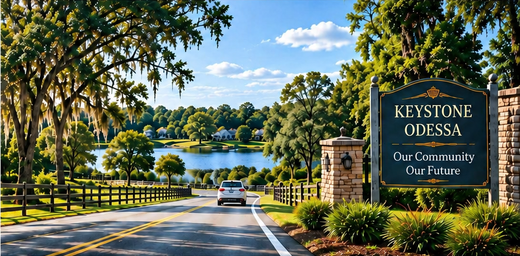
886 × 437 px · visible crop
Chỉ cắt phần pixel đang nhìn thấy trong screenshot; giữ hiệu ứng/icon/nhãn có sẵn nếu có. Không phục hồi phần bị che. Dùng ở kích thước phù hợp nguồn, chưa bảo đảm cho hero lớn.
Screenshot nguồn · PDF [17]
P017-02
Issue card Roads — đường và traffic
353 × 145 px · embedded-icon
Chỉ cắt phần pixel đang nhìn thấy trong screenshot; giữ hiệu ứng/icon/nhãn có sẵn nếu có. Không phục hồi phần bị che. Dùng ở kích thước phù hợp nguồn, chưa bảo đảm cho hero lớn.
Screenshot nguồn · PDF [17]
P017-03
Issue card Water — hồ/cảnh quan nước
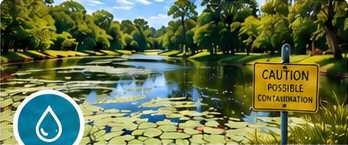
348 × 145 px · embedded-icon
Chỉ cắt phần pixel đang nhìn thấy trong screenshot; giữ hiệu ứng/icon/nhãn có sẵn nếu có. Không phục hồi phần bị che. Dùng ở kích thước phù hợp nguồn, chưa bảo đảm cho hero lớn.
Screenshot nguồn · PDF [17]
P017-04
Issue card Everyday Needs — nhà ở
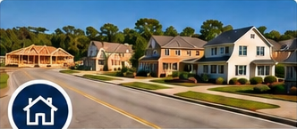
332 × 145 px · embedded-icon
Chỉ cắt phần pixel đang nhìn thấy trong screenshot; giữ hiệu ứng/icon/nhãn có sẵn nếu có. Không phục hồi phần bị che. Dùng ở kích thước phù hợp nguồn, chưa bảo đảm cho hero lớn.
Screenshot nguồn · PDF [17]
P019-01
Ảnh đường và pedestrian bên dưới heading Roads
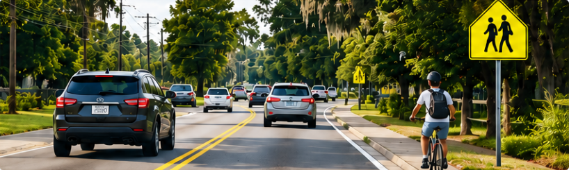
818 × 245 px · visible crop
Chỉ cắt phần pixel đang nhìn thấy trong screenshot; giữ hiệu ứng/icon/nhãn có sẵn nếu có. Không phục hồi phần bị che. Dùng ở kích thước phù hợp nguồn, chưa bảo đảm cho hero lớn.
Screenshot nguồn · PDF [19]
P021-02
Septic Concentration
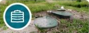
179 × 68 px · embedded-icon
Chỉ cắt phần pixel đang nhìn thấy trong screenshot; giữ hiệu ứng/icon/nhãn có sẵn nếu có. Không phục hồi phần bị che. Dùng ở kích thước phù hợp nguồn, chưa bảo đảm cho hero lớn.
Screenshot nguồn · PDF [21]
P021-03
Septic Repairs
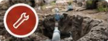
179 × 68 px · embedded-icon
Chỉ cắt phần pixel đang nhìn thấy trong screenshot; giữ hiệu ứng/icon/nhãn có sẵn nếu có. Không phục hồi phần bị che. Dùng ở kích thước phù hợp nguồn, chưa bảo đảm cho hero lớn.
Screenshot nguồn · PDF [21]
P021-04
Private Wells
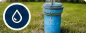
178 × 68 px · embedded-icon
Chỉ cắt phần pixel đang nhìn thấy trong screenshot; giữ hiệu ứng/icon/nhãn có sẵn nếu có. Không phục hồi phần bị che. Dùng ở kích thước phù hợp nguồn, chưa bảo đảm cho hero lớn.
Screenshot nguồn · PDF [21]
P021-05
Groundwater — thumbnail mặt nước
179 × 68 px · embedded-icon
Chỉ cắt phần pixel đang nhìn thấy trong screenshot; giữ hiệu ứng/icon/nhãn có sẵn nếu có. Không phục hồi phần bị che. Dùng ở kích thước phù hợp nguồn, chưa bảo đảm cho hero lớn.
Screenshot nguồn · PDF [21]
P021-06
Wellfields, Lakes & Wetlands
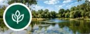
179 × 68 px · embedded-icon
Chỉ cắt phần pixel đang nhìn thấy trong screenshot; giữ hiệu ứng/icon/nhãn có sẵn nếu có. Không phục hồi phần bị che. Dùng ở kích thước phù hợp nguồn, chưa bảo đảm cho hero lớn.
Screenshot nguồn · PDF [21]
P021-07
Water & Wastewater Infrastructure
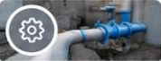
178 × 68 px · embedded-icon
Chỉ cắt phần pixel đang nhìn thấy trong screenshot; giữ hiệu ứng/icon/nhãn có sẵn nếu có. Không phục hồi phần bị che. Dùng ở kích thước phù hợp nguồn, chưa bảo đảm cho hero lớn.
Screenshot nguồn · PDF [21]
P025-02
Timeline 2001 — countryside
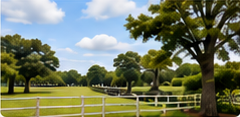
240 × 117 px · visible crop
Chỉ cắt phần pixel đang nhìn thấy trong screenshot; giữ hiệu ứng/icon/nhãn có sẵn nếu có. Không phục hồi phần bị che. Dùng ở kích thước phù hợp nguồn, chưa bảo đảm cho hero lớn.
Screenshot nguồn · PDF [25]
P025-03
Timeline TODAY — traffic
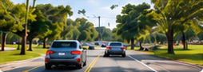
254 × 90 px · visible crop
Chỉ cắt phần pixel đang nhìn thấy trong screenshot; giữ hiệu ứng/icon/nhãn có sẵn nếu có. Không phục hồi phần bị che. Dùng ở kích thước phù hợp nguồn, chưa bảo đảm cho hero lớn.
Screenshot nguồn · PDF [25]
P025-04
Timeline 2026 — tòa nhà civic
253 × 63 px · visible crop
Chỉ cắt phần pixel đang nhìn thấy trong screenshot; giữ hiệu ứng/icon/nhãn có sẵn nếu có. Không phục hồi phần bị che. Dùng ở kích thước phù hợp nguồn, chưa bảo đảm cho hero lớn.
Screenshot nguồn · PDF [25]
P025-05
Policy area Roads — thumbnail
197 × 73 px · visible crop
Chỉ cắt phần pixel đang nhìn thấy trong screenshot; giữ hiệu ứng/icon/nhãn có sẵn nếu có. Không phục hồi phần bị che. Dùng ở kích thước phù hợp nguồn, chưa bảo đảm cho hero lớn.
Screenshot nguồn · PDF [25]
P025-06
Policy area Water — thumbnail
188 × 73 px · visible crop
Chỉ cắt phần pixel đang nhìn thấy trong screenshot; giữ hiệu ứng/icon/nhãn có sẵn nếu có. Không phục hồi phần bị che. Dùng ở kích thước phù hợp nguồn, chưa bảo đảm cho hero lớn.
Screenshot nguồn · PDF [25]
P025-07
Policy area Housing — thumbnail
202 × 73 px · visible crop
Chỉ cắt phần pixel đang nhìn thấy trong screenshot; giữ hiệu ứng/icon/nhãn có sẵn nếu có. Không phục hồi phần bị che. Dùng ở kích thước phù hợp nguồn, chưa bảo đảm cho hero lớn.
Screenshot nguồn · PDF [25]
P025-08
Policy area Services — thumbnail
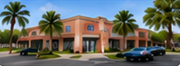
199 × 73 px · visible crop
Chỉ cắt phần pixel đang nhìn thấy trong screenshot; giữ hiệu ứng/icon/nhãn có sẵn nếu có. Không phục hồi phần bị che. Dùng ở kích thước phù hợp nguồn, chưa bảo đảm cho hero lớn.
Screenshot nguồn · PDF [25]
P027-02
Dải photo Roads ở đầu cột 1
403 × 57 px · partial-scene
Chỉ cắt phần pixel đang nhìn thấy trong screenshot; giữ hiệu ứng/icon/nhãn có sẵn nếu có. Không phục hồi phần bị che. Dùng ở kích thước phù hợp nguồn, chưa bảo đảm cho hero lớn.
Screenshot nguồn · PDF [27]
P027-03
Dải photo Water ở đầu cột 2
376 × 57 px · partial-scene
Chỉ cắt phần pixel đang nhìn thấy trong screenshot; giữ hiệu ứng/icon/nhãn có sẵn nếu có. Không phục hồi phần bị che. Dùng ở kích thước phù hợp nguồn, chưa bảo đảm cho hero lớn.
Screenshot nguồn · PDF [27]
P027-04
Dải photo Housing ở đầu cột 3
401 × 57 px · partial-scene
Chỉ cắt phần pixel đang nhìn thấy trong screenshot; giữ hiệu ứng/icon/nhãn có sẵn nếu có. Không phục hồi phần bị che. Dùng ở kích thước phù hợp nguồn, chưa bảo đảm cho hero lớn.
Screenshot nguồn · PDF [27]
P030-01
Ảnh đường ban đêm góc trên phải
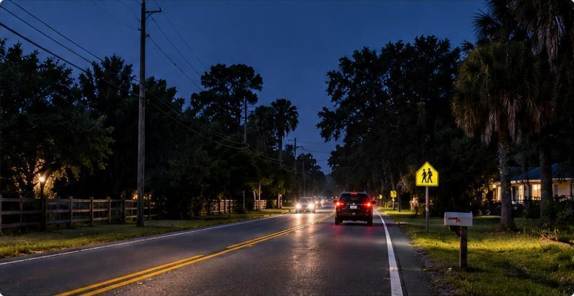
813 × 420 px · visible crop
Chỉ cắt phần pixel đang nhìn thấy trong screenshot; giữ hiệu ứng/icon/nhãn có sẵn nếu có. Không phục hồi phần bị che. Dùng ở kích thước phù hợp nguồn, chưa bảo đảm cho hero lớn.
Screenshot nguồn · PDF [30]
P031-01
Ảnh road/traffic dưới heading Gunn Highway
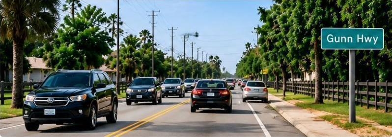
798 × 280 px · visible crop
Chỉ cắt phần pixel đang nhìn thấy trong screenshot; giữ hiệu ứng/icon/nhãn có sẵn nếu có. Không phục hồi phần bị che. Dùng ở kích thước phù hợp nguồn, chưa bảo đảm cho hero lớn.
Screenshot nguồn · PDF [31]
P032-01
Pedestrian/cyclist trên lề đường
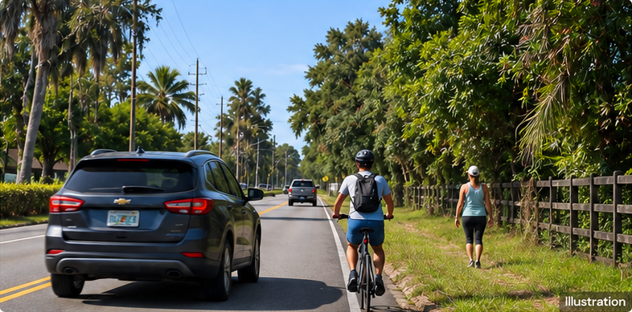
786 × 389 px · illustration-label
Chỉ cắt phần pixel đang nhìn thấy trong screenshot; giữ hiệu ứng/icon/nhãn có sẵn nếu có. Không phục hồi phần bị che. Dùng ở kích thước phù hợp nguồn, chưa bảo đảm cho hero lớn.
Screenshot nguồn · PDF [32]
P033-01
Fire engine/EMS trên đường
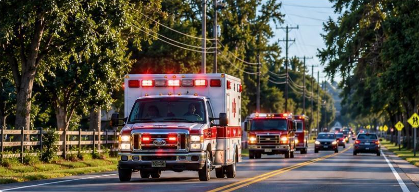
824 × 377 px · visible crop
Chỉ cắt phần pixel đang nhìn thấy trong screenshot; giữ hiệu ứng/icon/nhãn có sẵn nếu có. Không phục hồi phần bị che. Dùng ở kích thước phù hợp nguồn, chưa bảo đảm cho hero lớn.
Screenshot nguồn · PDF [33]
P039-01
Safety Data — ảnh collision
262 × 218 px · visible crop
Chỉ cắt phần pixel đang nhìn thấy trong screenshot; giữ hiệu ứng/icon/nhãn có sẵn nếu có. Không phục hồi phần bị che. Dùng ở kích thước phù hợp nguồn, chưa bảo đảm cho hero lớn.
Screenshot nguồn · PDF [39]
P039-02
Traffic Data — ảnh xe cộ
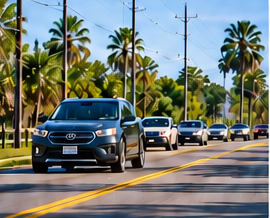
270 × 218 px · visible crop
Chỉ cắt phần pixel đang nhìn thấy trong screenshot; giữ hiệu ứng/icon/nhãn có sẵn nếu có. Không phục hồi phần bị che. Dùng ở kích thước phù hợp nguồn, chưa bảo đảm cho hero lớn.
Screenshot nguồn · PDF [39]
P041-01
Ảnh road làm nền sau Community Plan cover
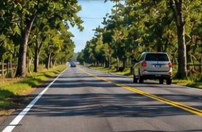
288 × 188 px · partial-scene
Chỉ cắt phần pixel đang nhìn thấy trong screenshot; giữ hiệu ứng/icon/nhãn có sẵn nếu có. Không phục hồi phần bị che. Dùng ở kích thước phù hợp nguồn, chưa bảo đảm cho hero lớn.
Screenshot nguồn · PDF [41]
P041-02
Ảnh city/highway aerial sau County cover
288 × 103 px · partial-scene
Chỉ cắt phần pixel đang nhìn thấy trong screenshot; giữ hiệu ứng/icon/nhãn có sẵn nếu có. Không phục hồi phần bị che. Dùng ở kích thước phù hợp nguồn, chưa bảo đảm cho hero lớn.
Screenshot nguồn · PDF [41]
P049-01
Ảnh hồ lớn bên trái
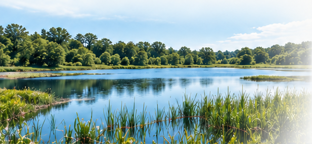
617 × 286 px · baked-gradient
Chỉ cắt phần pixel đang nhìn thấy trong screenshot; giữ hiệu ứng/icon/nhãn có sẵn nếu có. Không phục hồi phần bị che. Dùng ở kích thước phù hợp nguồn, chưa bảo đảm cho hero lớn.
Screenshot nguồn · PDF [49]
P049-02
Circle 1 — septic lid
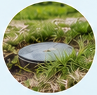
138 × 135 px · circular-mask
Chỉ cắt phần pixel đang nhìn thấy trong screenshot; giữ hiệu ứng/icon/nhãn có sẵn nếu có. Không phục hồi phần bị che. Dùng ở kích thước phù hợp nguồn, chưa bảo đảm cho hero lớn.
Screenshot nguồn · PDF [49]
P049-03
Circle 2 — vòi/thiết bị cấp nước
138 × 135 px · circular-mask
Chỉ cắt phần pixel đang nhìn thấy trong screenshot; giữ hiệu ứng/icon/nhãn có sẵn nếu có. Không phục hồi phần bị che. Dùng ở kích thước phù hợp nguồn, chưa bảo đảm cho hero lớn.
Screenshot nguồn · PDF [49]
P049-04
Circle 3 — landscape nước
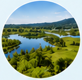
138 × 135 px · circular-mask
Chỉ cắt phần pixel đang nhìn thấy trong screenshot; giữ hiệu ứng/icon/nhãn có sẵn nếu có. Không phục hồi phần bị che. Dùng ở kích thước phù hợp nguồn, chưa bảo đảm cho hero lớn.
Screenshot nguồn · PDF [49]
P051-01
Dải ảnh hồ/cây dưới LEFT OUT. BY CHOICE.
1536 × 103 px · baked-gradient
Chỉ cắt phần pixel đang nhìn thấy trong screenshot; giữ hiệu ứng/icon/nhãn có sẵn nếu có. Không phục hồi phần bị che. Dùng ở kích thước phù hợp nguồn, chưa bảo đảm cho hero lớn.
Screenshot nguồn · PDF [51]
P052-01
Banner photo Community Plan — rural road
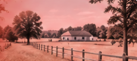
230 × 103 px · partial-scene, baked-gradient, baked-tint
Chỉ cắt phần pixel đang nhìn thấy trong screenshot; giữ hiệu ứng/icon/nhãn có sẵn nếu có. Không phục hồi phần bị che. Dùng ở kích thước phù hợp nguồn, chưa bảo đảm cho hero lớn.
Screenshot nguồn · PDF [52]
P052-02
Banner photo County Plan — city
270 × 103 px · partial-scene, baked-gradient
Chỉ cắt phần pixel đang nhìn thấy trong screenshot; giữ hiệu ứng/icon/nhãn có sẵn nếu có. Không phục hồi phần bị che. Dùng ở kích thước phù hợp nguồn, chưa bảo đảm cho hero lớn.
Screenshot nguồn · PDF [52]
P053-01
Septic Data — aerial neighborhood thumbnail
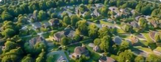
263 × 101 px · visible crop
Chỉ cắt phần pixel đang nhìn thấy trong screenshot; giữ hiệu ứng/icon/nhãn có sẵn nếu có. Không phục hồi phần bị che. Dùng ở kích thước phù hợp nguồn, chưa bảo đảm cho hero lớn.
Screenshot nguồn · PDF [53]
P053-02
Repair Records — excavation thumbnail
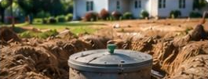
265 × 101 px · visible crop
Chỉ cắt phần pixel đang nhìn thấy trong screenshot; giữ hiệu ứng/icon/nhãn có sẵn nếu có. Không phục hồi phần bị che. Dùng ở kích thước phù hợp nguồn, chưa bảo đảm cho hero lớn.
Screenshot nguồn · PDF [53]
P053-06
Next issue — ảnh đường/nhà ở
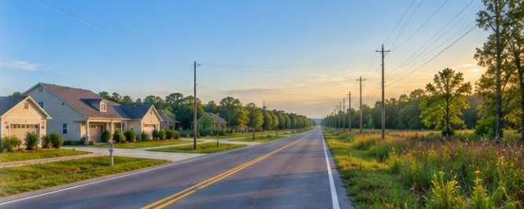
666 × 266 px · partial-scene
Chỉ cắt phần pixel đang nhìn thấy trong screenshot; giữ hiệu ứng/icon/nhãn có sẵn nếu có. Không phục hồi phần bị che. Dùng ở kích thước phù hợp nguồn, chưa bảo đảm cho hero lớn.
Screenshot nguồn · PDF [53]
P058-02
Grocery Stores thumbnail
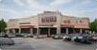
97 × 50 px · visible crop
Chỉ cắt phần pixel đang nhìn thấy trong screenshot; giữ hiệu ứng/icon/nhãn có sẵn nếu có. Không phục hồi phần bị che. Dùng ở kích thước phù hợp nguồn, chưa bảo đảm cho hero lớn.
Screenshot nguồn · PDF [58]
P058-03
Healthcare thumbnail
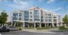
97 × 50 px · visible crop
Chỉ cắt phần pixel đang nhìn thấy trong screenshot; giữ hiệu ứng/icon/nhãn có sẵn nếu có. Không phục hồi phần bị che. Dùng ở kích thước phù hợp nguồn, chưa bảo đảm cho hero lớn.
Screenshot nguồn · PDF [58]
P058-04
Childcare thumbnail
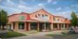
97 × 49 px · visible crop
Chỉ cắt phần pixel đang nhìn thấy trong screenshot; giữ hiệu ứng/icon/nhãn có sẵn nếu có. Không phục hồi phần bị che. Dùng ở kích thước phù hợp nguồn, chưa bảo đảm cho hero lớn.
Screenshot nguồn · PDF [58]
P058-05
Restaurants thumbnail
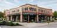
97 × 49 px · visible crop
Chỉ cắt phần pixel đang nhìn thấy trong screenshot; giữ hiệu ứng/icon/nhãn có sẵn nếu có. Không phục hồi phần bị che. Dùng ở kích thước phù hợp nguồn, chưa bảo đảm cho hero lớn.
Screenshot nguồn · PDF [58]
P058-06
Employment/Jobs thumbnail
97 × 49 px · visible crop
Chỉ cắt phần pixel đang nhìn thấy trong screenshot; giữ hiệu ứng/icon/nhãn có sẵn nếu có. Không phục hồi phần bị che. Dùng ở kích thước phù hợp nguồn, chưa bảo đảm cho hero lớn.
Screenshot nguồn · PDF [58]
P059-01
Cột trái — ảnh landscape/housing dài
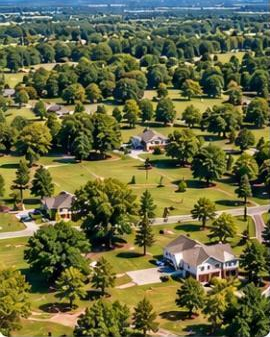
270 × 337 px · partial-scene
Chỉ cắt phần pixel đang nhìn thấy trong screenshot; giữ hiệu ứng/icon/nhãn có sẵn nếu có. Không phục hồi phần bị che. Dùng ở kích thước phù hợp nguồn, chưa bảo đảm cho hero lớn.
Screenshot nguồn · PDF [59]
P059-02
Cột phải — ảnh residential aerial dài
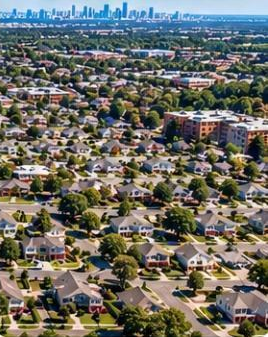
268 × 337 px · partial-scene
Chỉ cắt phần pixel đang nhìn thấy trong screenshot; giữ hiệu ứng/icon/nhãn có sẵn nếu có. Không phục hồi phần bị che. Dùng ở kích thước phù hợp nguồn, chưa bảo đảm cho hero lớn.
Screenshot nguồn · PDF [59]
P060-03
Housing Data — aerial photo
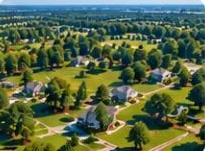
205 × 151 px · visible crop
Chỉ cắt phần pixel đang nhìn thấy trong screenshot; giữ hiệu ứng/icon/nhãn có sẵn nếu có. Không phục hồi phần bị che. Dùng ở kích thước phù hợp nguồn, chưa bảo đảm cho hero lớn.
Screenshot nguồn · PDF [60]
P060-05
Travel Data — traffic photo
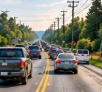
169 × 152 px · partial-scene
Chỉ cắt phần pixel đang nhìn thấy trong screenshot; giữ hiệu ứng/icon/nhãn có sẵn nếu có. Không phục hồi phần bị che. Dùng ở kích thước phù hợp nguồn, chưa bảo đảm cho hero lớn.
Screenshot nguồn · PDF [60]
P060-06
Infrastructure Records — construction photo
189 × 152 px · partial-scene
Chỉ cắt phần pixel đang nhìn thấy trong screenshot; giữ hiệu ứng/icon/nhãn có sẵn nếu có. Không phục hồi phần bị che. Dùng ở kích thước phù hợp nguồn, chưa bảo đảm cho hero lớn.
Screenshot nguồn · PDF [60]
P060-07
Outdated Plan continuation — rural aerial
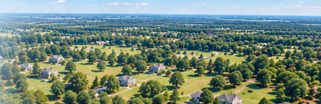
641 × 208 px · partial-scene, baked-gradient
Chỉ cắt phần pixel đang nhìn thấy trong screenshot; giữ hiệu ứng/icon/nhãn có sẵn nếu có. Không phục hồi phần bị che. Dùng ở kích thước phù hợp nguồn, chưa bảo đảm cho hero lớn.
Screenshot nguồn · PDF [60]
P063-01
Roads comparison header — road photo góc phải
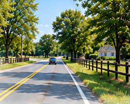
265 × 211 px · partial-scene
Chỉ cắt phần pixel đang nhìn thấy trong screenshot; giữ hiệu ứng/icon/nhãn có sẵn nếu có. Không phục hồi phần bị che. Dùng ở kích thước phù hợp nguồn, chưa bảo đảm cho hero lớn.
Screenshot nguồn · PDF [63]
P063-02
Community Plan column — road strip
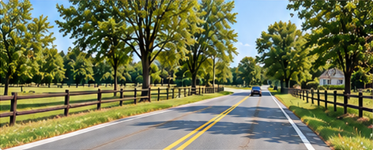
472 × 190 px · visible crop
Chỉ cắt phần pixel đang nhìn thấy trong screenshot; giữ hiệu ứng/icon/nhãn có sẵn nếu có. Không phục hồi phần bị che. Dùng ở kích thước phù hợp nguồn, chưa bảo đảm cho hero lớn.
Screenshot nguồn · PDF [63]
P063-03
County Framework column — road strip
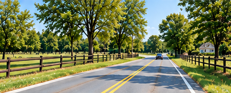
471 × 190 px · visible crop
Chỉ cắt phần pixel đang nhìn thấy trong screenshot; giữ hiệu ứng/icon/nhãn có sẵn nếu có. Không phục hồi phần bị che. Dùng ở kích thước phù hợp nguồn, chưa bảo đảm cho hero lớn.
Screenshot nguồn · PDF [63]
P065-01
Water comparison header — hồ và bồn nước
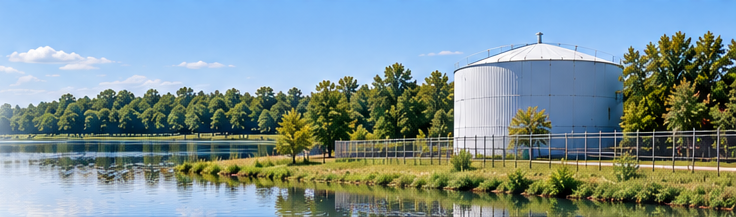
736 × 217 px · partial-scene, baked-gradient
Chỉ cắt phần pixel đang nhìn thấy trong screenshot; giữ hiệu ứng/icon/nhãn có sẵn nếu có. Không phục hồi phần bị che. Dùng ở kích thước phù hợp nguồn, chưa bảo đảm cho hero lớn.
Screenshot nguồn · PDF [65]
P067-01
Screenshot 110 — rural landscape header
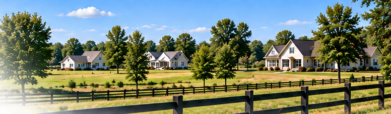
776 × 227 px · partial-scene, baked-gradient
Chỉ cắt phần pixel đang nhìn thấy trong screenshot; giữ hiệu ứng/icon/nhãn có sẵn nếu có. Không phục hồi phần bị che. Dùng ở kích thước phù hợp nguồn, chưa bảo đảm cho hero lớn.
Screenshot nguồn · PDF [67]
P067-02
Community Plan row 1 — pasture/fence
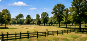
175 × 83 px · visible crop
Chỉ cắt phần pixel đang nhìn thấy trong screenshot; giữ hiệu ứng/icon/nhãn có sẵn nếu có. Không phục hồi phần bị che. Dùng ở kích thước phù hợp nguồn, chưa bảo đảm cho hero lớn.
Screenshot nguồn · PDF [67]
P067-03
Community Plan row 2 — narrow rural lane
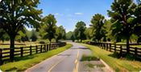
175 × 90 px · visible crop
Chỉ cắt phần pixel đang nhìn thấy trong screenshot; giữ hiệu ứng/icon/nhãn có sẵn nếu có. Không phục hồi phần bị che. Dùng ở kích thước phù hợp nguồn, chưa bảo đảm cho hero lớn.
Screenshot nguồn · PDF [67]
P067-04
Community Plan row 3 — farmhouse
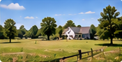
175 × 89 px · visible crop
Chỉ cắt phần pixel đang nhìn thấy trong screenshot; giữ hiệu ứng/icon/nhãn có sẵn nếu có. Không phục hồi phần bị che. Dùng ở kích thước phù hợp nguồn, chưa bảo đảm cho hero lớn.
Screenshot nguồn · PDF [67]
P067-05
Community Plan row 4 — countryside
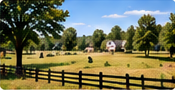
175 × 90 px · visible crop
Chỉ cắt phần pixel đang nhìn thấy trong screenshot; giữ hiệu ứng/icon/nhãn có sẵn nếu có. Không phục hồi phần bị che. Dùng ở kích thước phù hợp nguồn, chưa bảo đảm cho hero lớn.
Screenshot nguồn · PDF [67]
P067-06
County row 2 — residential aerial
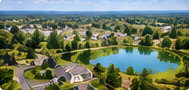
189 × 90 px · visible crop
Chỉ cắt phần pixel đang nhìn thấy trong screenshot; giữ hiệu ứng/icon/nhãn có sẵn nếu có. Không phục hồi phần bị che. Dùng ở kích thước phù hợp nguồn, chưa bảo đảm cho hero lớn.
Screenshot nguồn · PDF [67]
P067-07
County row 3 — townhomes
189 × 88 px · visible crop
Chỉ cắt phần pixel đang nhìn thấy trong screenshot; giữ hiệu ứng/icon/nhãn có sẵn nếu có. Không phục hồi phần bị che. Dùng ở kích thước phù hợp nguồn, chưa bảo đảm cho hero lớn.
Screenshot nguồn · PDF [67]
P067-08
County row 4 — wood-frame construction
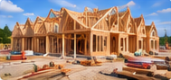
189 × 89 px · visible crop
Chỉ cắt phần pixel đang nhìn thấy trong screenshot; giữ hiệu ứng/icon/nhãn có sẵn nếu có. Không phục hồi phần bị che. Dùng ở kích thước phù hợp nguồn, chưa bảo đảm cho hero lớn.
Screenshot nguồn · PDF [67]
P068-01
What remains — rural lake/houses header
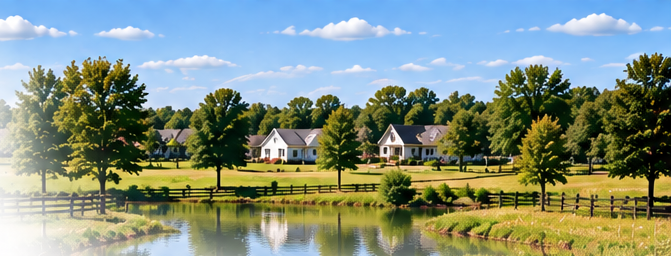
671 × 256 px · partial-scene, baked-gradient
Chỉ cắt phần pixel đang nhìn thấy trong screenshot; giữ hiệu ứng/icon/nhãn có sẵn nếu có. Không phục hồi phần bị che. Dùng ở kích thước phù hợp nguồn, chưa bảo đảm cho hero lớn.
Screenshot nguồn · PDF [68]
P070-01
Evidence header — light landscape background
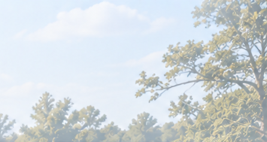
446 × 237 px · partial-scene, baked-gradient
Chỉ cắt phần pixel đang nhìn thấy trong screenshot; giữ hiệu ứng/icon/nhãn có sẵn nếu có. Không phục hồi phần bị che. Dùng ở kích thước phù hợp nguồn, chưa bảo đảm cho hero lớn.
Screenshot nguồn · PDF [70]
P070-02
Road Evidence — road photo
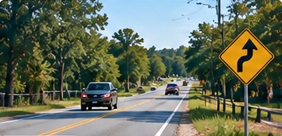
354 × 171 px · visible crop
Chỉ cắt phần pixel đang nhìn thấy trong screenshot; giữ hiệu ứng/icon/nhãn có sẵn nếu có. Không phục hồi phần bị che. Dùng ở kích thước phù hợp nguồn, chưa bảo đảm cho hero lớn.
Screenshot nguồn · PDF [70]
P070-03
Water Evidence — lake photo
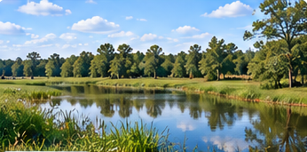
346 × 171 px · visible crop
Chỉ cắt phần pixel đang nhìn thấy trong screenshot; giữ hiệu ứng/icon/nhãn có sẵn nếu có. Không phục hồi phần bị che. Dùng ở kích thước phù hợp nguồn, chưa bảo đảm cho hero lớn.
Screenshot nguồn · PDF [70]
P070-04
Growth Evidence — houses photo
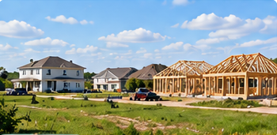
350 × 171 px · visible crop
Chỉ cắt phần pixel đang nhìn thấy trong screenshot; giữ hiệu ứng/icon/nhãn có sẵn nếu có. Không phục hồi phần bị che. Dùng ở kích thước phù hợp nguồn, chưa bảo đảm cho hero lớn.
Screenshot nguồn · PDF [70]
P072-01
Library heading — faded trees/landscape
376 × 160 px · partial-scene, baked-gradient
Chỉ cắt phần pixel đang nhìn thấy trong screenshot; giữ hiệu ứng/icon/nhãn có sẵn nếu có. Không phục hồi phần bị che. Dùng ở kích thước phù hợp nguồn, chưa bảo đảm cho hero lớn.
Screenshot nguồn · PDF [72]
P072-04
Library row 3 — water landscape thumbnail
197 × 84 px · visible crop
Chỉ cắt phần pixel đang nhìn thấy trong screenshot; giữ hiệu ứng/icon/nhãn có sẵn nếu có. Không phục hồi phần bị che. Dùng ở kích thước phù hợp nguồn, chưa bảo đảm cho hero lớn.
Screenshot nguồn · PDF [72]
P072-05
Library row 4 — septic repair photo
197 × 79 px · visible crop
Chỉ cắt phần pixel đang nhìn thấy trong screenshot; giữ hiệu ứng/icon/nhãn có sẵn nếu có. Không phục hồi phần bị che. Dùng ở kích thước phù hợp nguồn, chưa bảo đảm cho hero lớn.
Screenshot nguồn · PDF [72]
P072-07
From Evidence to Action — countryside background
286 × 37 px · partial-scene
Chỉ cắt phần pixel đang nhìn thấy trong screenshot; giữ hiệu ứng/icon/nhãn có sẵn nếu có. Không phục hồi phần bị che. Dùng ở kích thước phù hợp nguồn, chưa bảo đảm cho hero lớn.
Screenshot nguồn · PDF [72]
P074-01
Action hero — family/community beside landscape
1124 × 401 px · partial-scene
Chỉ cắt phần pixel đang nhìn thấy trong screenshot; giữ hiệu ứng/icon/nhãn có sẵn nếu có. Không phục hồi phần bị che. Dùng ở kích thước phù hợp nguồn, chưa bảo đảm cho hero lớn.
Screenshot nguồn · PDF [74]
P079-01
Add Support card — clipboard
450 × 234 px · embedded-icon, embedded-number
Chỉ cắt phần pixel đang nhìn thấy trong screenshot; giữ hiệu ứng/icon/nhãn có sẵn nếu có. Không phục hồi phần bị che. Dùng ở kích thước phù hợp nguồn, chưa bảo đảm cho hero lớn.
Screenshot nguồn · PDF [79]
P079-02
Share Story card — writing in notebook
445 × 236 px · embedded-icon, embedded-number
Chỉ cắt phần pixel đang nhìn thấy trong screenshot; giữ hiệu ứng/icon/nhãn có sẵn nếu có. Không phục hồi phần bị che. Dùng ở kích thước phù hợp nguồn, chưa bảo đảm cho hero lớn.
Screenshot nguồn · PDF [79]
P079-03
Share Information card — stack of folders
457 × 236 px · embedded-icon, embedded-number
Chỉ cắt phần pixel đang nhìn thấy trong screenshot; giữ hiệu ứng/icon/nhãn có sẵn nếu có. Không phục hồi phần bị che. Dùng ở kích thước phù hợp nguồn, chưa bảo đảm cho hero lớn.
Screenshot nguồn · PDF [79]
P080-01
Share Story — mailbox/rural street background
278 × 289 px · partial-scene
Chỉ cắt phần pixel đang nhìn thấy trong screenshot; giữ hiệu ứng/icon/nhãn có sẵn nếu có. Không phục hồi phần bị che. Dùng ở kích thước phù hợp nguồn, chưa bảo đảm cho hero lớn.
Screenshot nguồn · PDF [80]
P082-01
Road Safety story — road photo
463 × 199 px · visible crop
Chỉ cắt phần pixel đang nhìn thấy trong screenshot; giữ hiệu ứng/icon/nhãn có sẵn nếu có. Không phục hồi phần bị che. Dùng ở kích thước phù hợp nguồn, chưa bảo đảm cho hero lớn.
Screenshot nguồn · PDF [82]
P082-02
Water story — cloudy-water glass
446 × 199 px · visible crop
Chỉ cắt phần pixel đang nhìn thấy trong screenshot; giữ hiệu ứng/icon/nhãn có sẵn nếu có. Không phục hồi phần bị che. Dùng ở kích thước phù hợp nguồn, chưa bảo đảm cho hero lớn.
Screenshot nguồn · PDF [82]
P082-03
Everyday Access story — pharmacy/shops
466 × 199 px · visible crop
Chỉ cắt phần pixel đang nhìn thấy trong screenshot; giữ hiệu ứng/icon/nhãn có sẵn nếu có. Không phục hồi phần bị che. Dùng ở kích thước phù hợp nguồn, chưa bảo đảm cho hero lớn.
Screenshot nguồn · PDF [82]
P087-01
Petition backdrop — cảnh cây/đường hai bên
Nền petition bị tiêu đề và form che gần hết. Không xuất cả UI làm ảnh nền, không vá/xóa chữ hoặc ghép các mép ảnh. Giữ screenshot nguồn làm tham chiếu; chưa có nền độc lập đầy đủ.
Screenshot nguồn · PDF [87, 88]